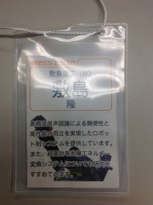
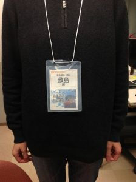
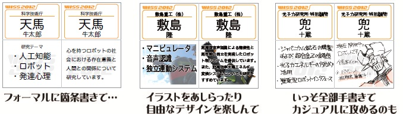

WISSでは、参加者間の交流促進・議論の活性化のために、名札をはがきサイズにして参加者全員が印刷・持参するポジションペーパー風のものを用います。
どんな名札？
従来の名札では、名前と所属くらいしか目につかないものでしたが、WISSの名札は、サイズが大きく、両面使えて、もっと沢山の情報を書き込めるようになりました。例えば…
- 自分の研究についてアピール
- イラストも交えてキャッチーな自己紹介
- 表には真面目なこと、裏には自分の隠れた趣味を…
などなど、参加者の皆さんの創意工夫で、名札を様々にお役立ていただけます。

こんな感じで、名札を今まで以上に有効活用できるようにしました!
テンプレートが用意されていますから、それを元に自分で名札をデザインできます。例えば…

工夫次第でもっとおかしなものまで入れられる?（電子基板を仕込んだ人も居ました…）
当日までにどうすればいいの?
以下に示す名札のテンプレートファイルを参照の上、御自分の名札を作成し、印刷したものを会議にお持ちください（期間中、名札としてお使いいただきます）。
テンプレートはいずれもA4サイズです。参加登録区分によって使うページが異なりますので、該当するページを印刷して切り取った後、二つ折りにして名札ホルダーに差し込んで使います（名刺ホルダーは受付で配布します）。
なお、WISSで使用している名札ホルダーは(株)スガタの「イベント用名札 ハガキサイズ」で、内寸 W103×H150mm です。
注意
- 名前は遠くからでもハッキリとわかるように書きましょう
- 表面は少し視認性のよいデザインを心がけましょう
- ポジションペーパーとしての機能は最低限確保しましょう